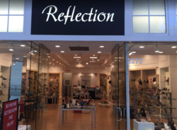

Kennia Paredes
I am a current Education Major at the University of California, Riverside. I am very interested in becoming a teacher to help our future generations become motivated to achieving their dreams and pursuing higher education in the field of their choice. But for me to graduate and continue my journey, I have to work part time during school to support myself so I can keep going to school and get everything I need.
I come from a low income single parent minority family. And that is primarily the demographic of students I want to help. I did not have many teachers who looked like me or that I could really relate to growing up. I want to be that positive figure in the low income schools with high minority attendance, to show the little girls and boys who do not speak English well or understand their teachers that everyone can achieve their dreams if they work hard.
To achieve this, I am studying for education and getting my Bachelor's degree, then eventually receiving my teaching credentials. Besides that, I want to go back to school for a Master's in high school counseling, to help students who are not given the information they need about how to remain on track to attend college, and help them apply. This will be meaningful work to me, to help others that would otherwise not be helped.
Experience
Volunteer
• Counselor for middle school students at science camp
• Took care of students getting to different tasks
• During hikes, first aide
• Discipline
Education
UC Riverside
Portfolio

.jpg)
.jpg)
.jpg)